Volcan Agua depuis le campement sur l'Acatenango au levé du soleil.
Le guatemala
Un pays riche de plein de choses
Situé au Nord de l'amérique Centrale, le Guatemala paraît petit mais on peut y trouver : Océan Pacifique, Mer des Caraïbes via le Golfe du Honduras, volcans actifs, jungles, vestiges maya, culture ancestrale et même 24 langues officiles !
Entre le Mexique, le Belize, le Salvador et le Honduras, le pays est traversé par la Panaméricaine, qui permets aux commerces de se développer. Notamment, on retrouve les fincas, où poussent à profusion mangues, cafés, avocat, etc. Et y a tellement de fruits incroyables que j'ai failli aménagé sur le marché.
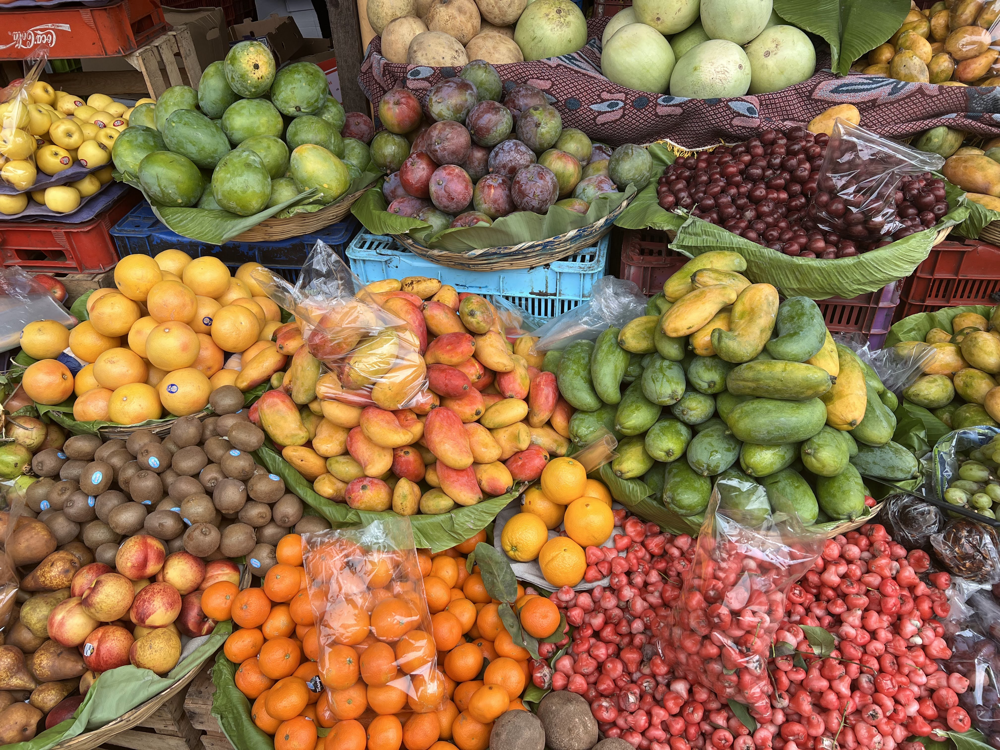
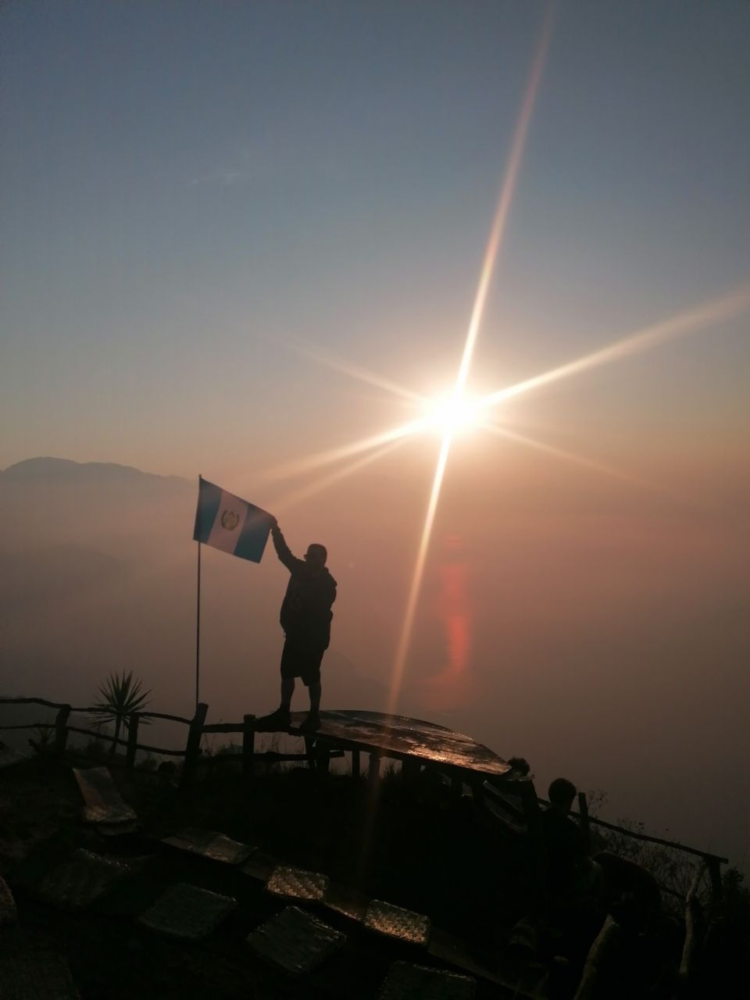
La partie Sud Sud Ouest fait partie de la ceinture de feu du Pacifique, expliquant la présence d'un grand nombre de volcans. La culture y est intense, du fait de la fertilité des terres et des conditions exceptionnelles, via aussi l'altitude élevé de cette partie du pays. Au contraire, la partie Est du pays est bien plus basse, couverte de jungle.
Malheureusement, malgré toute la diversité du pays, il est soumis à d'importants soucis de pollution, notamment via l'agriculture et les déchets, et sa situation géographique le rend très exposé au changement climatique.
Le tourisme est un acteur majeur du développement du pays. J'espère que vous aurez l'occasion d'y aller. Je ne donne pas beaucoup d'infos pratiques, je veux juste partager mon expérience dans ce pays, en incluant les nombreuses problématiques auxquelles il fait face et qui impactent notamment la vie des populations locales. Je pense que voyager ne signifie pas simplement voir les beaux sites touristiques. Je pense que voyager permet de découvrir un pays, comme il est vraiment, et d'agir à notre échelle pour permettre que les merveilles qu'il présente soient préservées aussi longtemps que possible.
Population en 2023 : 18.121.000Monnaie : Quetzal (≈0.10€)Source
Même si j'ai perdu beaucoup de photo suite à notre passage au Nicaragua, je met celles que j'ai réussi a récupérer !
Mon Périple au Guatemala en 10 étapes !
Arrivé de France à Guatemala City, je suis directement parti à Antigua, capitale historique et touristique. Mon voyage étant axé sur les volcans, je suis resté sur la ceinture de feu du Pacifique, le long de la côte Sud du pays.
Principalement en bus jusque Quetzaltenango, ou Xéla, et la frontière mexicaine avant de rebrousser chemin. Camille me rejoint à Antigua, on monte une dernière fois le Fuego, puis on file au Salvador !
Un voyage de 25 jours entre volcans, fruits délicieux et culture Maya (et croix rouge)
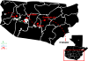
Itinéraire emprunté au Guatemala, et principaux volcans gravis !
1
Etape 1
Antigua de Guatemala
Antigua est une ville coloniale bien conservée, entourée de volcans, dont l'Agua qui domine la ville et le Fuego fumant au loin. Très touristique, on y trouve facilement des auberges. Elle est le point de départ d'un grand nombre d'activités et de déplacement vers d'autres parties du pays. J'ai tout de même trouvé que touristes et locaux cohabitent bien, et j'ai beaucoup apprécié mon passage dans la ville.
Une journée m'a suffit pour visiter les principales activités touristiques, mais deux ou plus sont agréables pour profiter de la ville, de son superbe marché, de la vue des rooftop des auberges et des alentours proches.
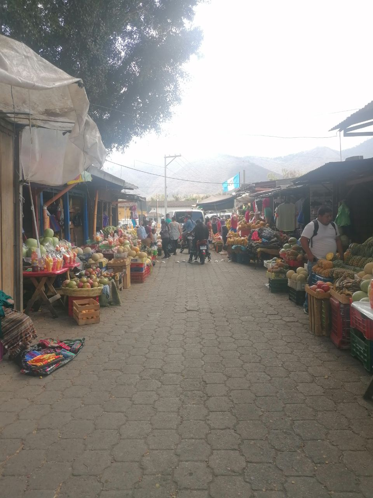
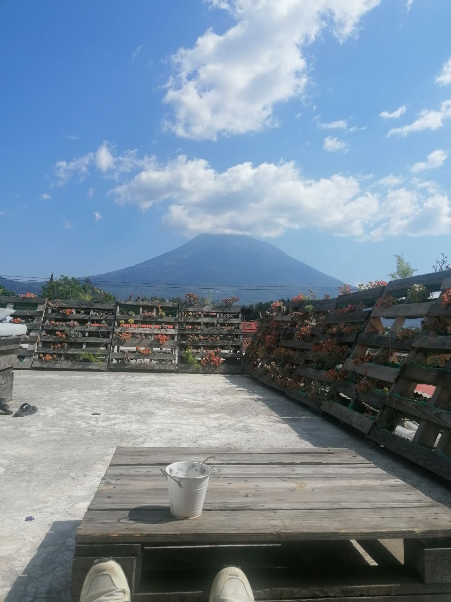
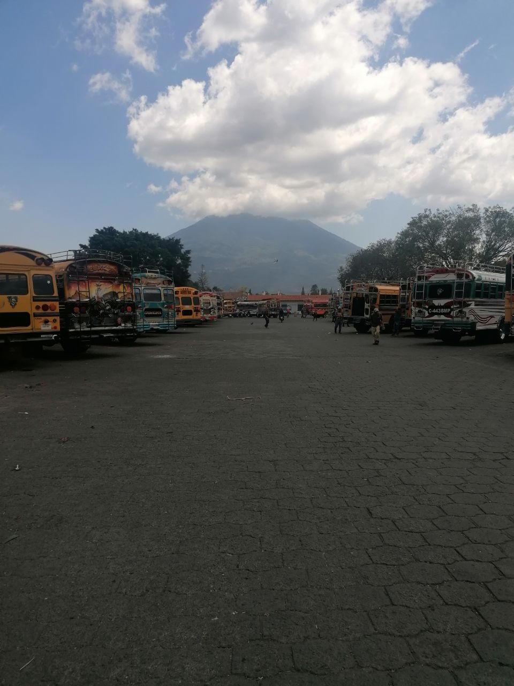
2
Etape 2
Volcan Pacaya
A peine remis du jetlag, c'est parti pour rencontrer le Pacaya ! En éruption en 2021, l'activité se fait sentir par endroit et on peut même faire fondre des chamallaw ! Il faut être accompagné d'un guide, et une excusrion depuis Antigua est la façon la plus simple d'accéder au volcan.
Cette première activité permet de découvrir la campagne Guatémaltèque, bien loin de la campagne toulousaine !
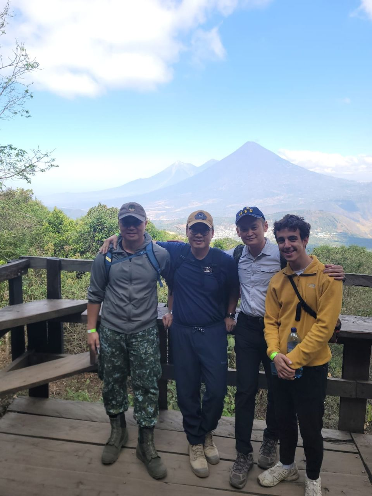
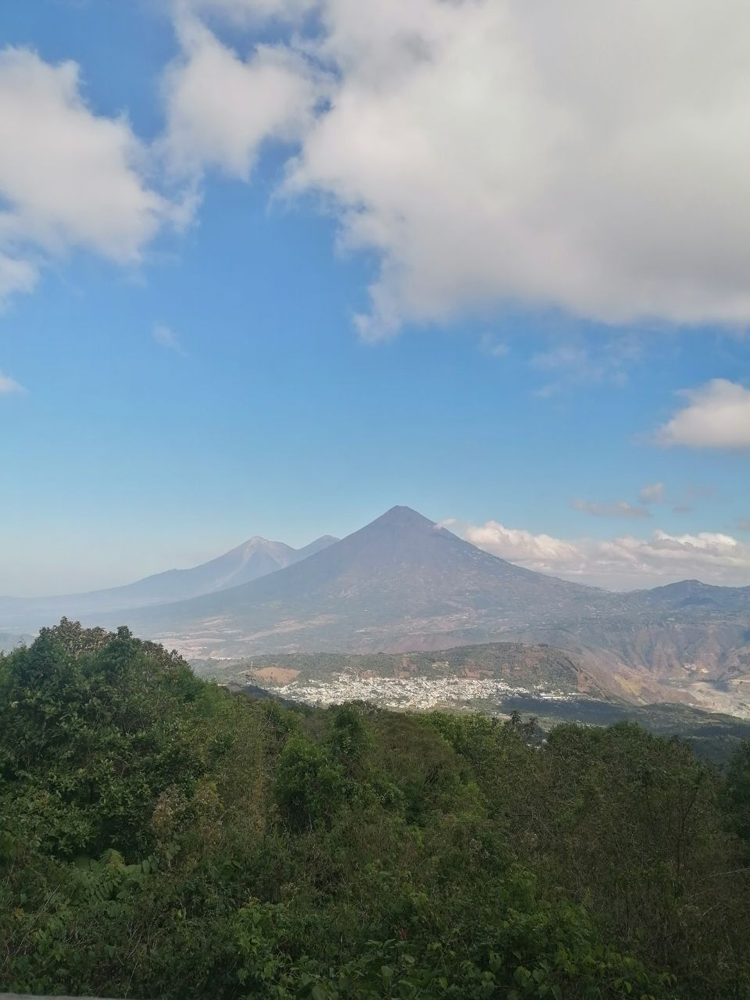
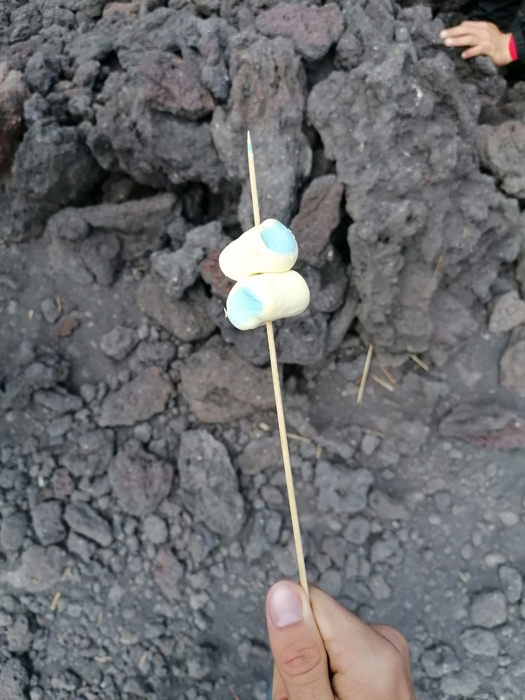
J'ai réalisé mon excursion avec Get Your Guide, mais chaque auberge propose des expeditions.
Assez rapidement, je repars sur un volcan emblématique du pays, en éruption quasi-ininterrompue. L'Acatenango est un volcan voisin très proche du Fuego, sans activité eruptive, permettant donc l'observation privilégiée du Fuego magnifiquement explosif. J'ai réalisé l'excursion sans compagnie d'expedition, à l'aide des chicken bus et de mon GPS. Il faut être expérimenté en randonnée pour l'entreprendre seul, et bien acclimaté car on frôle les 4000 m ! Pour en savoir plus sur mon ascension en solo, cliquer ici :
Après cette excursion de 2 jours, direction le lac Atiltan, un des plus beaux du monde selon nombre de classements. J'y vais en navette (organisée par l'auberge), et arrivée à Panajachel. A mon arrivée, je ne le savais pas encore, mais j'ai eu la meilleure vue des 5 jours sur le lac, le brouillard cachait tout !! Mélangé aux fumées des écobuages courant dans la région.
Panajachel est sympa mais je traverse rapidement le lac à l'assaut des village de l'autre rive. Le transport se fait en speedboat ici ! Plutôt agréable. Je visite San Juan de la Laguna, San Perdo et San Pellegrino (non je rigole ca c'est de l'eau).
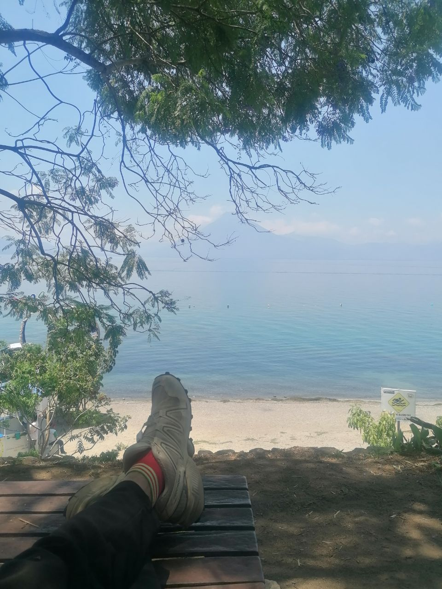
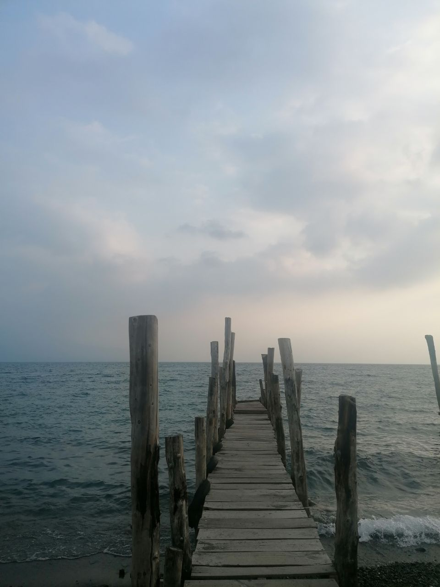
5
Etape 5
Volcans du lac Atitlan
Ni une ni deux, malgré la météo, je file sur les volcans environnants
⚠️ Les volcans autour du lac sont réputés pour pas être très propice au touriste. Les risques de vol sont important. Si vous tentez l'ascension, faites le avec pas grand chose.⚠️
Le 1er : San Pedro. Après 1800m de dénivelé pour pas assez de km pour que ce soit facile, une vue exceptionnelles sur l'intérieur du nuage, et de très près en plus ! Qui aurait dit que c'était entièrement blanc...Sinon les arbres étaient jolis. Pas d'activité volcanique observée ici.
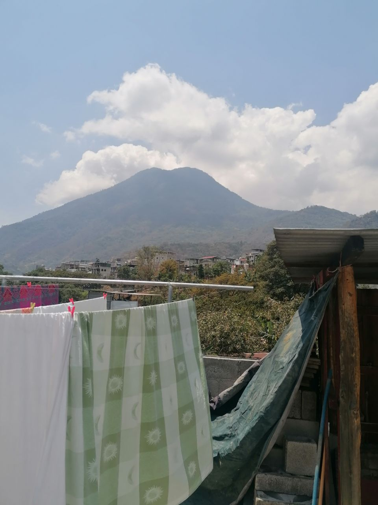
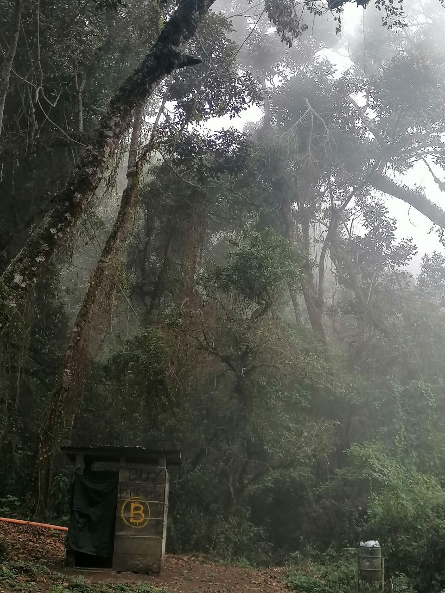
Le 2nd et 3eme : Les volcans Toliman et Atitlan, au départ de Santiago Atitlan. Chemin très peu emprunté, itinéraire bien sportif, une double ascension pas de tout repos ! Quelues fois on peut suivre les indications de l'UTX, ou l'ultra trail du lac Atitlan. Le trajet est récompensé par le superbe cratère du volcan Atitlan, au activités discrètes mais bien présentes.
Le retour peut se faire en utilisant les bateaux, donc pas obligé de revenir au point de départ ! Attention tout de même aux horaires !
Après un incontournable touristique appelé "el nariz del indio", un point de vu sur le lac aux nombreuses expéditions au levé du soleil, je lave quelques habits et part pour Quetzaltenango à pied. Ca se fait souvent dans l'autre sens avec une agence de voyage et des guides locaux, mais sans grand budget et avec l'envie de marcher, j'ai fais à ma façon. Moins rassurant, mais exceptionnel. Après trois jours de marche, je rejoins Xela, en passant par des points magnifiques. Notamment, une nuit au sommet du volcan Zunil avec des vues exceptionnelles, sur les étoiles, les orages environnants, le volcans de la chaînes et même les panaches issus des explosions, même si malheureusement les explosions ne venaient pas que des volcans ce soir là. Je recommande donc d'aller faire un tour sur ma page dédiée à la comparaison de matériel, rubrique filtre à eau.
Pour le voyage en Amérique Centrale, j'étais parti avec un sac à dos de randonnée d'une 50aine de litres, avec ma tente, matelas, duvet, réchaud, et tout ce qu'il faut. J'avais même mon ordinateur ! En autonomie pour trois jours, j'étais donc bien chargé.
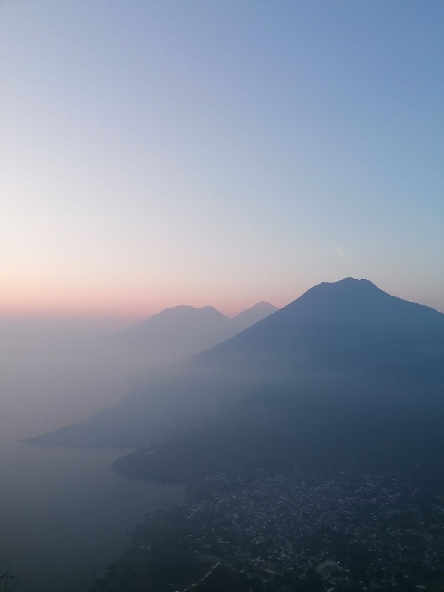
Vue du lac, levé du soleil, El Nariz Del Indio
La première étape de la randonnée se fait via des sentiers agricoles et des routes, en pleine campagne du lac Atitlan. Le regards des locaux est curieux, les échanges sont courts : "donde vas ?", "Al Volcan", pointant du doigt le Zunil. Ils me prennent pour un fou, mais toujours avec le sourire ! Ensuite, les routes empruntées se dégradent et rétrécissent. Je traverse un minuscule village perdu en pleine fôret, c'est assez étonnant. Peu après je pose mon bivouac au bord d'un ruisseau. Je suis maintenant sur des sentiers empruntés par des locaux.
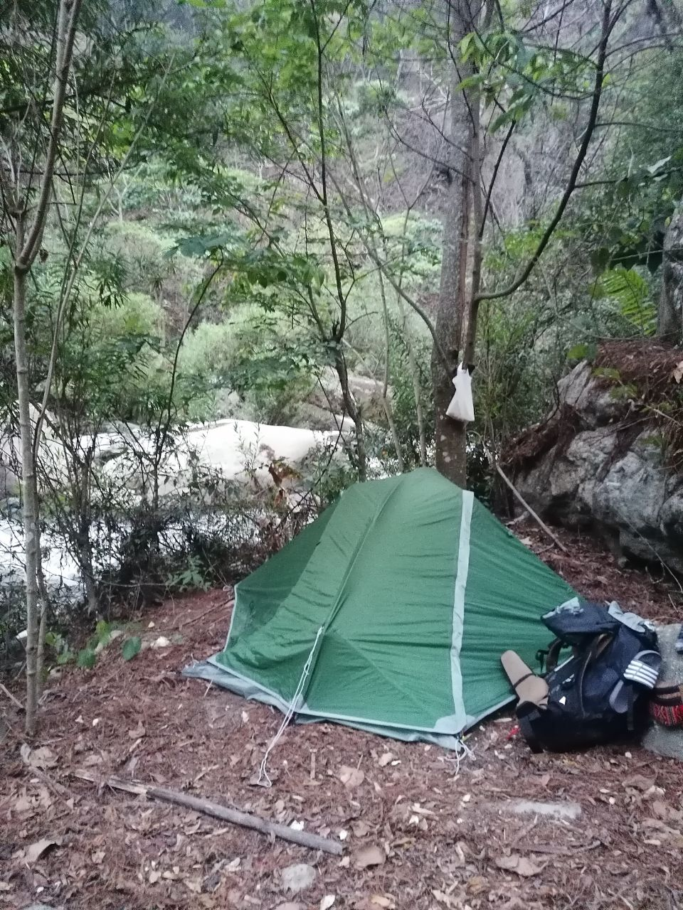
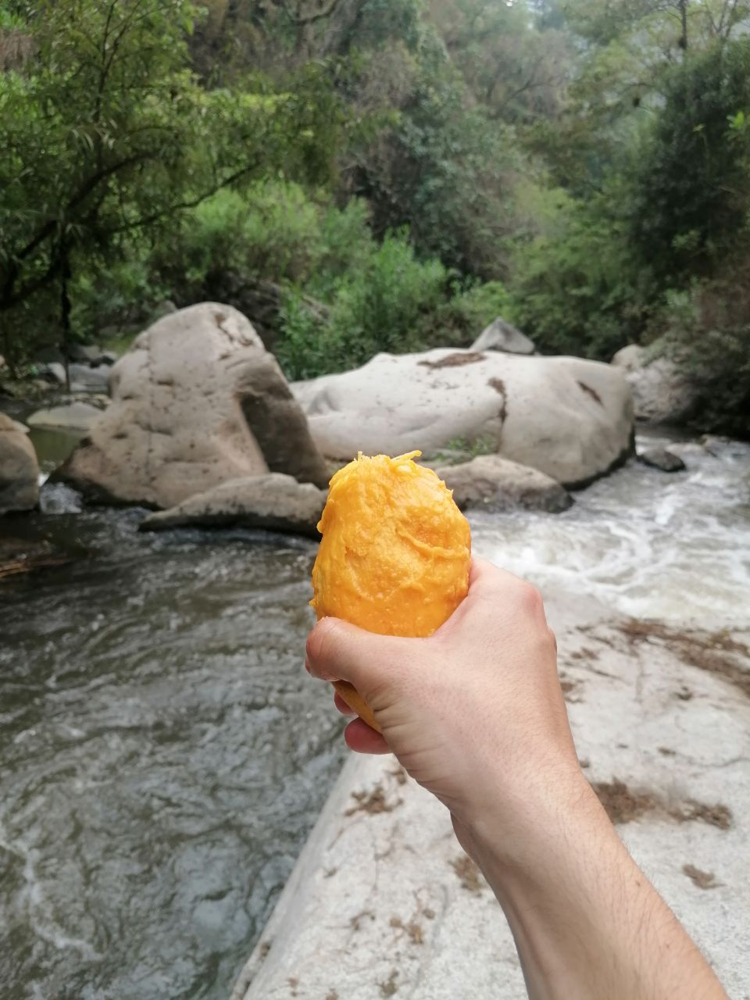
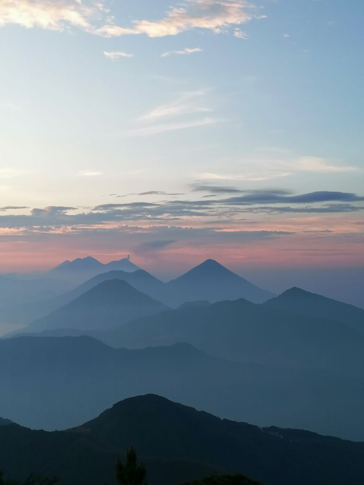
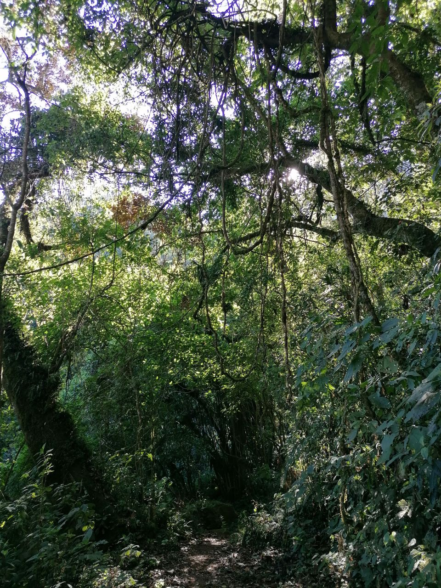
La seconde étape présente beaucoup de dénivelé, d'abord en fôret, puis au travers de d'autres petits village. Toujours les mêmes interactions. Certains me parlent d'Mbappé ! Puis j'attaque l'ascension du fameux Zunil, par un côté peu emprunté. Je commence à appercevoir Xela. Je cherche beaucoup mon chemin, parfois je le créé en poussant la végétation, j'avance doucement. Ma philosophie : "Tant que je monte, je me rapproche du sommet" ! J'arrive enfin au sommet, où je pose mon bivouac au maximum à l'abri du vent. La vue est splendide, je suis bouche bée.
Le dernier jour est le plus court, et le plus dur. Un mal de ventre énorme à cause de l'eau. Donc je bois plus d'eau. Pourtant, c'est que de la descente ! Sentier technique, en fôret vraiment dense, mais c'est l'accès officiel du Zunil. En haut des volcans du Guatemala, beaucoup de cérémonies et de traditions se déroulent. Donc le chemin est quand même assez emprunté. L'arrivée du sentier, si j'ai bien calculé, se trouve sur des sources d'eau chaudes !!
Les fuentes georginas cloturent donc mon périple, permettant de bien récupérer ! Je rentre en stop avec un évangeliste puis en bus jusque Xela. Repos !
J'ai fais une petite page sur les 2 randonnées de plusieurs jours possibles dans cette partie du Guatemala, cliquez dessous !
Malgré le passage dans les thermes, je suis cloué plusieurs jours et doit même allé à la croix rouge. Je recommande à nouveau l'auberge Kasa Kiwi, d'une gentillesse inégalable et d'une aide immense, nécessaire dans la détresse dans laquelle j'étais. Même si ma maladie n'était vraiment pas agréable, j'ai pu rencontrer beaucoup de monde à l'auberge. J'étais un peu le gars qui est là depuis toujours dès quelques jours, vu le turnover ! Beaucoup arrivent du Mexique et vont vers le Sud. Seul Jan, un tchèque que vous découvrirez bientôt, était arrivé avant moi et est reparti très longtemps après.
J'ai tout de même pu visiter Xela, mais la ville n'est pas immense ! Je vous met tout de même quelques points intéressants.
Ascension du plus haut volcan d'Amérique Centrale, le Tajumulco !
Aussitôt remis sur pieds, on file avec un groupe rencontré à l'auberge de jeunesse avec qui on a eu le temps de sympatiser, sur le plus haut sommet d'Amérique Centrale : le Tajumulco ! Une ascension plutôt simple, mais pour aller au départ il faut prendre quelques bus. Aussi, nous étions bien chargés pour faire un super bivouac non loin du sommet.
Après une ascension plutôt simple (même si le volcan est haut, le départ l'est aussi !), nous explorons le volcan, observons le Mexique non loin, et profitons de la soirée autour d'un feu de camps, moments qui sont très importants lors d'un voyage
A cette altitude (4220m), il fait bien froid la nuit ! Heureusement qu'on avait une tente 3 places pour 6, ça réchauffe ! Fajitas, petite soirée et au lit ! Le retour se fait aussi simplement, l'excursion est superbe depuis Xela. Je conseille 2 jours tout de même, ou alors il faut partir très tôt pour pouvoir faire l'aller retour à la journée.
Comme d'habitude, quelques photo et un lien plus détaillé sur le volcan !
Après le retour à l'auberge et quelques préparatifs, on s'attaque au Santiaguito avec Jan, le fameux Tchèque, un peu fou mais motivé. Ce volcan est de ceux qu'on oublie pas. Pas tout à fait remis, je tente l'ascension, car elle m'appelle. En taxi jusque Llano del Pinal, nous entamons l'ascension. Le sentier n'est pas emprunté, ce qui rend difficile l'avancée. Nous trouvons tout de même notre chemin. Un moment de rupture nous fais passer de la jungle luxiriante au complexe volcanique.
Ca y est. Nous y sommes. Au coeur du volcan. Qu'une seule envie : escalader et poser la tente à 200m du cratère actif. Arrivé en haut, j'entend un français pas comme les autres : deux Québecois ! Nous observons les éruptions fréquentes et absolument innimaginable. Je n'ai pas dormi, j'ai regardé les blocs de lave se déchainer, rouler, exploser, dévaler, ... Le tout sous un ciel étoilé magnifique. Le lendemain, le retour est dur à prendre. On aimerait y rester bien plus longtemps. Mais on a faim aussi donc tant pis ! On choisit un itinéraire alternatif
Arrivé au point de départ, on est cuits !! Repos, resto, dodo !
J'en dis pas beaucoup plus et vous conseille vraiment de visiter la page dédiée.
Arrivée de Camille plongée directement dans l'aventure : Fuego X2 !
Juste après l'ascension, retour à Antigua, où Camille est arrivée alors que je montais le Santiaguito. Les retrouvailles, puis dodo pour nous deux complètement déphasés.
Pourtant, le lendemain, nous repartons pour l'ascension du Fuego, cette fois ci avec une compagnie. Nous nous équipons, prenons le transfert, et nous voilà à l'ascension de l'Acatenango jumeau du Fuego, depuis lequel on peut observer les éruptions fréquentes de ce dernier. Après une rude randonnée, nous atteignons le campement (des tentes en dur, avec beaucoup de lits). Le soleil se couche, le rouge de la lave se révèle et l'envie de s'approcher naît. La compagnie propose de le faire en supplément. Cela signifie redescendre de l'Acatenango, remonter sur le Fuego et inversement, de nuit. C'est costaud, surtout après la randonnée du jour. Mais bon, après un repas préparé par les guides, passé avec les autres membres du groupe, a observer les éruptions, on y va ! Et malgrè un vent immense aux abords du cratères, l'expérience est inoubliable. Riche de photo à la qualité redoutable voire doutable, ou même douteuse, nous revenons au campement passer une courte nuit. Certains se lèvent dès l'aube pour voir le levé du soleil depuis l'Acatenango
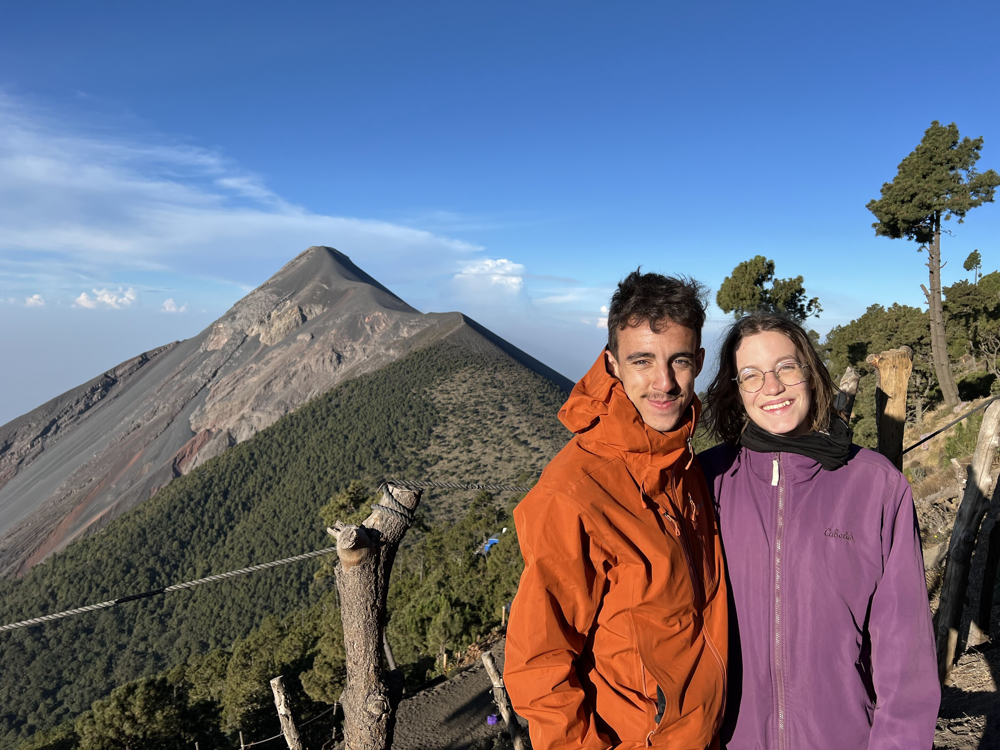
Il est possible de voir l'ombre du volcan le matin ! L'ayant déjà vu et Cam voulant se reposer, nous ferons juste demi tour direction Antigua. Je vous laisse découvrir les deux expériences (en solo et avec une compagnie) en cliquant ici :
C'est ainsi que notre aventure guatemaltèques s'achève. Il est temps pour nous d'aller prendre un bus à Guatemala City pour changer de pays et découvrir les volcans du Salvador ! Le Guatemala nous a offert des expériences uniques, et après de nombreux échanges avec les autres voyageurs, explorer les autres parties du pays doit être super !